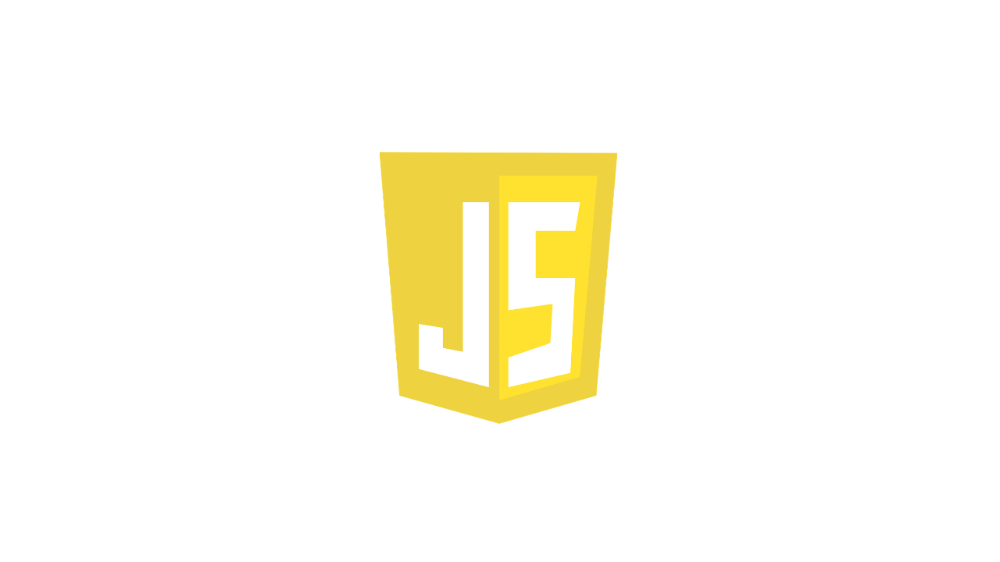
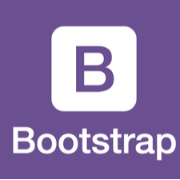

Hello,HTML.
HTMLは、主にWorld Wideにおいて、ウェブページを表現するために用いられます。

Hello,CSS.
CSSは、ウェブページやウェブアプリケーションの見た目やスタイルを指定するための言語です。

Hello,JS.
JavaScriptは、プログラミング言語であり、HTMLやCSSと並ぶ、WWWの中核技術の一つです。
JQuery
jQuery(ジェイクエリー)は、ウェブブラウザ用のJavaSqriptコードをより容易に記述できるようにするために設計されたJavaSqriptライブラリです。

Bootstrap
BootstrapはウェブサイトやWebアプリを作成するフレームワークです。タイポグラフィ、フォーム、ボタン、ナビゲーションなど、HTMLおよびCSSベースのテンプレートが用意されます。
Vue.js
Vue.jsはWebアプリケーションにおけるユーザーインターフェイスを構築するためのJavaSqriptフレームワークです。
1st step.Hello,HTML!!
HyperText Markup Language(ハイパーテキスト マークアップ ランゲージ)は、ハイパーテキストを記述するためのマークアップ言語の１つで、主にWorld Wide Web(WWW)において、ウェブページを表現するために用いられます。
2nd step.Hello,CSS!!
CSS(Cascading Style Sheets)は,HTMLやXMLの要素をどのように修飾(表示)するかを指示する仕様の一つで、文章の構造と体勢を分離させるという理念を実現するために提唱されたスタイルシートの具体的な仕様の一つです。
3nd step.Hello,JS!!
JavaScriptは、プログラミング言語であり、HTMLやCSSと並ぶ、WWWの中核技術の一つです。利用される場面はフロント/バックエンド、アプリなど、ブラウザからサーバ、デスクトップからスマートフォンまで多岐に渡ります。